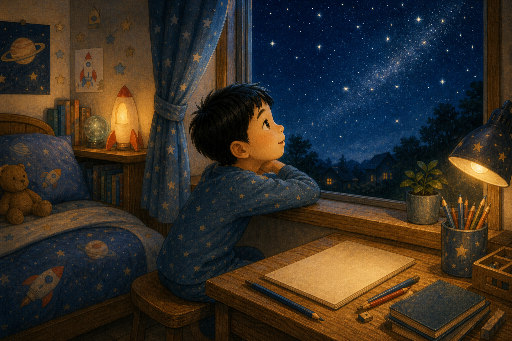
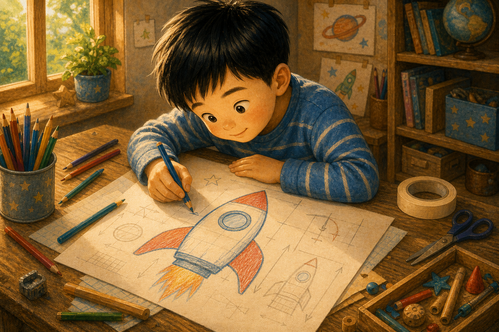
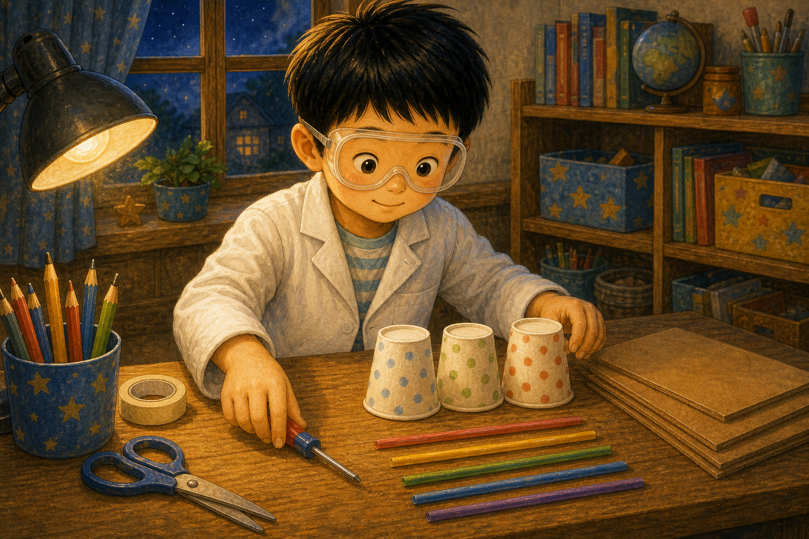
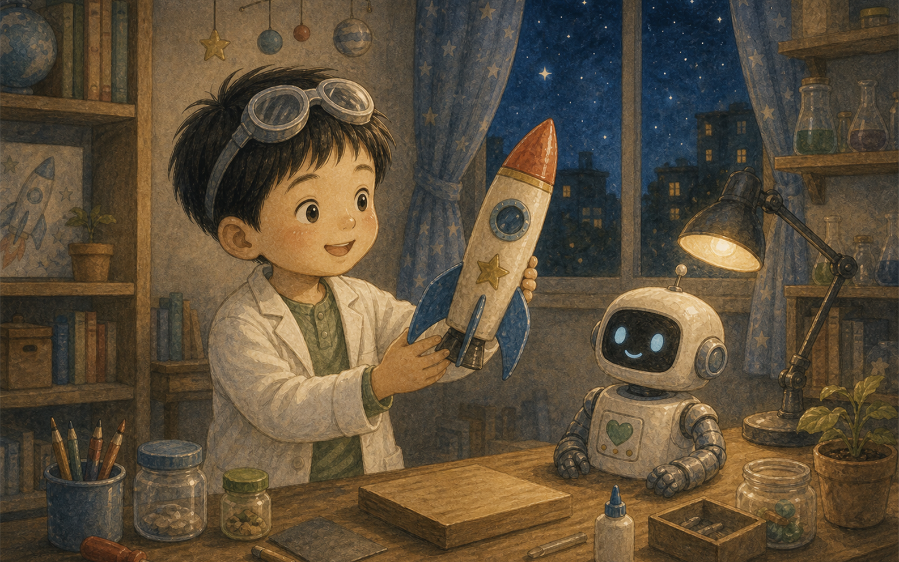
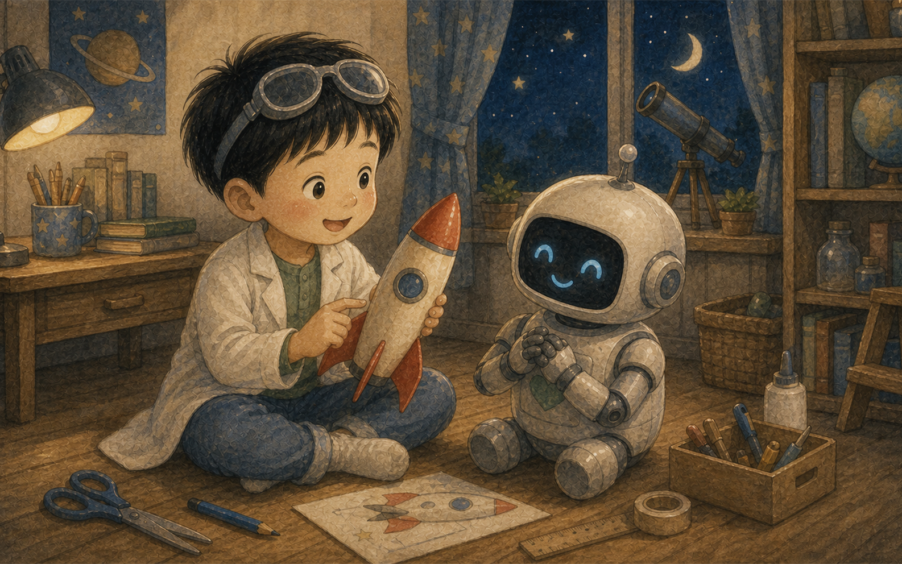
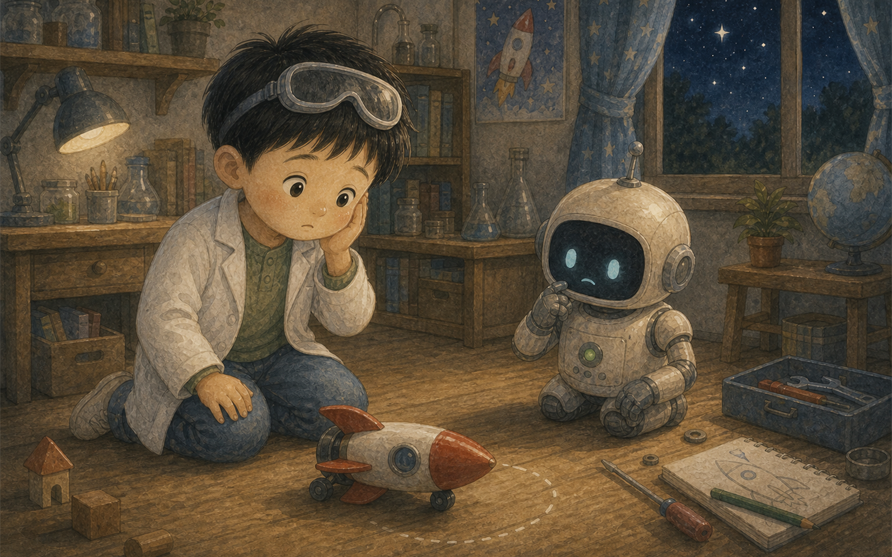
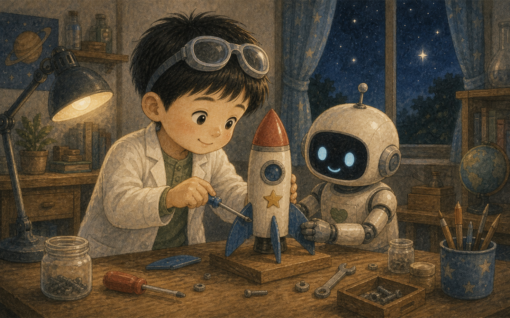
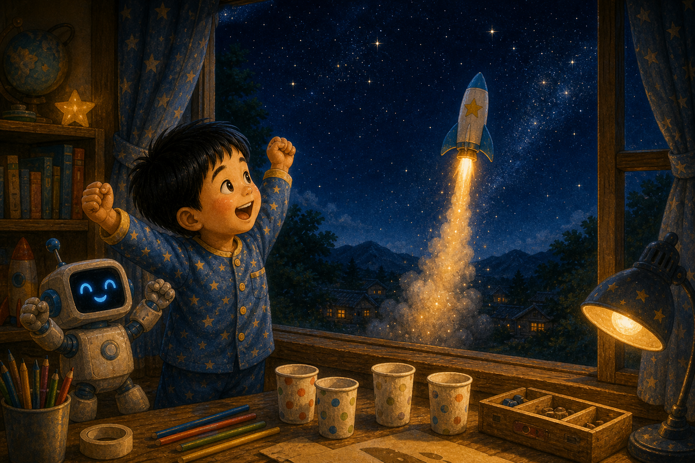
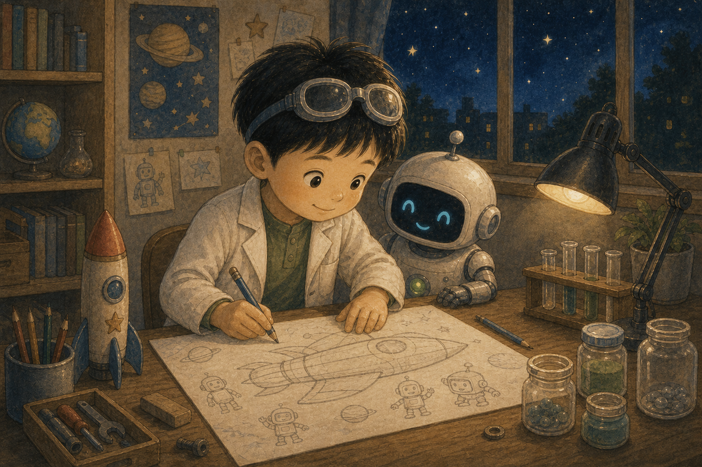
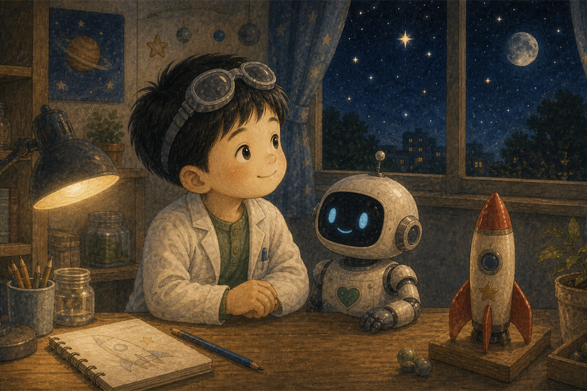

별빛 연구소
민준이는 별을 아주 좋아하는 아이였어요. 밤이 되면 창문 앞에 앉아 반짝이는 별을 바라보았지요.
“언젠가 내가 만든 로켓을 타고 별 가까이 가 볼 거야.”

민준이는 별을 아주 좋아하는 아이였어요. 밤이 되면 창문 앞에 앉아 반짝이는 별을 바라보았지요.
“언젠가 내가 만든 로켓을 타고 별 가까이 가 볼 거야.”

민준이의 책상 위에는 색연필과 종이, 작은 부품들이 놓여 있었어요. 민준이는 커다란 종이에 로켓 그림을 그렸어요.
“날개는 튼튼하게, 창문은 동그랗게!”

민준이는 하얀 가운을 입고 보호 안경을 썼어요. 작은 드라이버와 종이컵, 빨대를 조심조심 꺼냈지요.
“과학자는 안전하게 만드는 사람이야.”

로켓 몸통은 반짝였고, 파란 날개는 양쪽에 씩씩하게 붙었어요. 민준이는 로켓 끝에 노란 별 스티커를 붙였어요.
“이름은 별콩 로켓!”

이번에는 동그란 눈을 가진 로봇을 만들었어요. 로봇의 이름은 토토였어요. 토토는 파란 눈을 깜빡였답니다.
“삐빅! 민준 박사님, 무엇을 도와드릴까요?”

민준이와 토토는 로켓을 날려 보았어요. 그런데 로켓은 하늘로 가지 못하고 옆으로 데구루루 굴러갔어요.
“괜찮아. 실패는 다시 생각해 보라는 신호야.”

토토는 로켓 날개의 균형을 재 보았어요. 민준이는 날개 위치를 조금 옮기고, 몸통 안쪽도 다시 살펴보았어요.
“조금씩 고치면 더 멋진 발명이 돼.”

두 번째 실험에서 별콩 로켓은 곧게, 천천히, 높이 솟아올랐어요. 창밖의 별들도 반짝반짝 박수치는 것 같았지요.
“성공이야!”

그날 밤, 민준이는 새 설계도를 그렸어요. 더 큰 로켓, 더 똑똑한 로봇, 친구들과 함께 탈 우주 여행선이었어요.
“다음에는 모두 함께 별 여행을 떠나자.”

민준이는 알게 되었어요. 과학자는 한 번에 잘하는 사람이 아니에요. 궁금해하고, 다시 해 보고, 끝까지 상상하는 사람이지요.
별빛 연구소의 불은 그날도 오래도록 따뜻하게 빛났답니다.